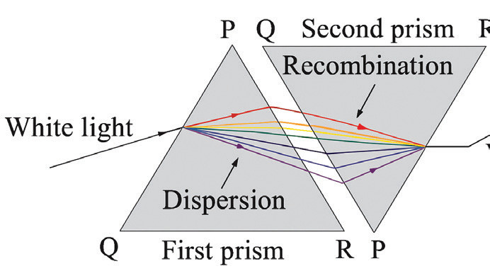
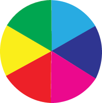

that is identical to the first prism? If the second prism is arranged similarly to the first prism, no further splitting of white light can be observed. But if the second prism is inverted with respect to the first prism, a beam of white light is observed to emerge from the other side of the second prism. This means that the dispersed colours of white light can be recombined to form white light, as illustrated by Figure 5.19. This phenomenon is known as the white colour recombination.

The experiment of recombination of the spectrum of light can be extended to observe the recombination of two or more individual colours. Sir Isaac Newton did this for the first time using prisms and mirrors. He discovered that when the light from the red, green, and blue regions of the spectrum are recombined, they regenerate white light. Therefore, he called red, green, and blue the primary colours.
Newton also observed that when two primary colours are combined, other colours are formed. For example, when blue and green lights are combined, cyan light is formed. Furthermore, green and red lights combine to give yellow light, while red and blue lights combine to form magenta light. Newton named the colours that resulted from recombining two primary colours as secondary colours. Secondary colours include yellow, cyan and magenta. He finally organised his findings in a colour wheel showing the three “primary colours” separated by the three “secondary colours”, as shown in Figure 5.20.
This colour wheel is famously known as the Newton colour wheel or disc. When the disc is rotated about its axis at high speed, all the colours blend to form a white colour. However, as the disc slows down, individual colours are seen again.

Since magenta was not a part of the light spectrum, its origin posed a mystery. This mystery was resolved by Hermann von Helmholtz, who established that the human eye consists of three types of colour receptors. One of the primary colours (red, blue and green) can stimulate only one receptor type. Moreover, the eye perceives all of the variations in colour by internally combining the signals from these receptors. Therefore, white light is seen when red, blue and green light enters the eye. However, when both red and blue light but no green light enters the eye, magenta is seen even though the light is not magenta. Similarly, when red and green light enters the eye, a yellow light is seen, and